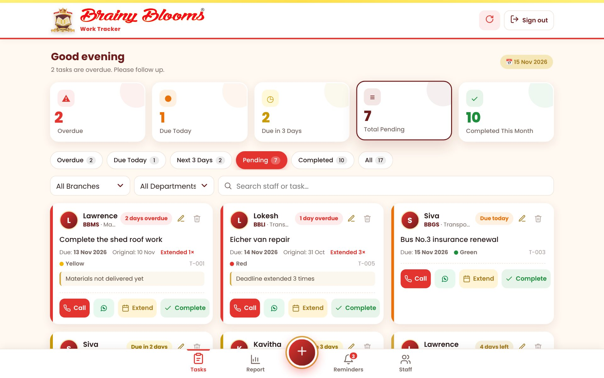
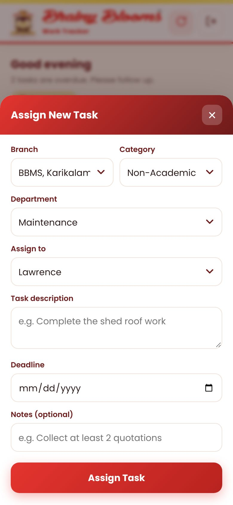
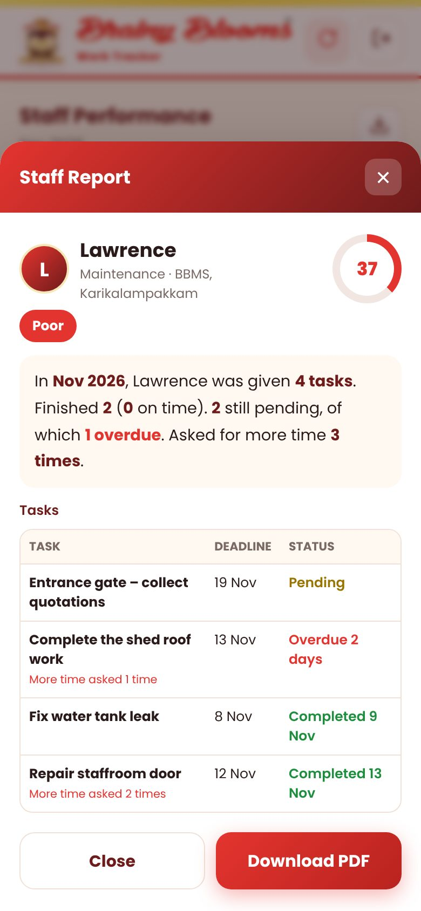
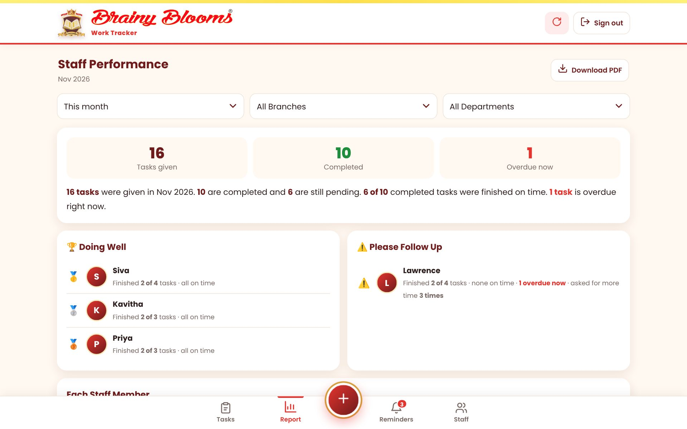
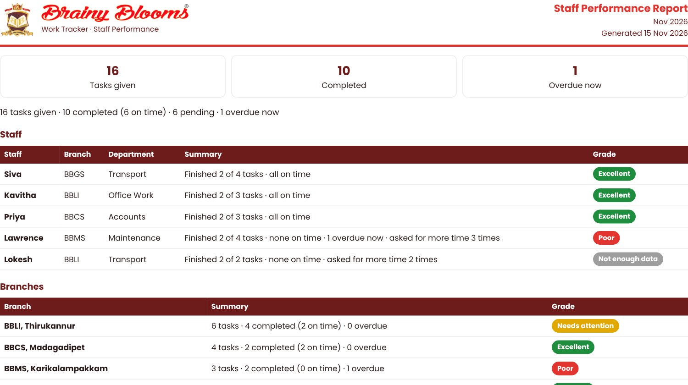

Brainy Blooms Work Tracker
A simple app that helps a school group with four branches keep track of work. Tasks are assigned with a deadline, and the chairman gets an alert only when something is due. It costs nothing to run, and the office team started using it the same weekend it was built.


Work was handed out, but nobody reported back
The chairman gives work to senior officials, who pass it to staff in maintenance, transport, accounts and the office. When a job was finished, or stuck, nobody told him.
To check, he scrolled through WhatsApp groups. A repair given 5 days would only be checked 10 to 15 days later. Some staff asked for "5 more days" again and again, with no record of it.
What he needed: a reminder when work is due, a number to call, and a way to see who keeps missing deadlines.
From the problem to a tool people use every day
I designed the solution and directed AI-assisted development, testing and reviewing every change before the team used it.
- Understood the workflowMapped how tasks move between the chairman, officials and four departments, using real cases like vehicle renewals and repair quotes.
- Made the product decisionsA website instead of a spreadsheet, English only, PIN login instead of accounts, and alerts only when work is due.
- Set it upCreated the Google account, put the web app online and fixed real problems such as login errors with multiple accounts.
- Tested itFound and fixed issues like a PIN error and a cropped logo, and checked every update before the team used it.
- Rolled it outThe office team added their staff and tasks on day one. Every update kept all their data safe.
- Improved it from feedbackAdded editing, branches, WhatsApp and reports as the team asked for them.
What it does
Alerts only when work is due
Every morning the app checks pending tasks. If something is due today or late, the chairman gets the task, the staff member, the deadline and a phone number. On quiet days, no message is sent.
- One tap to call or WhatsApp the staff member
- The WhatsApp reminder message is already written

Extra time is counted
When staff ask for more time, the office sets a new date in one tap. The original deadline is kept and every extension is counted, so a third "5 more days" is easy to see.
- Task cards turn yellow, then red, as deadlines pass
- Every date change is saved in a history log

Made for four branches
Every task and staff member belongs to a branch. When you assign work in one branch, only that branch's staff appear, plus staff who work across all branches.
- Filter the dashboard by branch or department
- Edit or reassign a task without losing its history

Reports anyone can read
Each staff member gets a simple grade (Excellent, Needs attention or Poor) and one plain sentence, like "Finished 2 of 4 tasks · none on time · asked for more time 3 times".
- Monthly view and branch comparison
- Staff with fewer than 3 tasks are not graded, so one bad week doesn't label anyone

Three free Google tools, no server to pay for
The website never reads the sheet directly. Every request goes through Apps Script, which checks the PIN first.
Choices I made, and why
Free instead of paid hosting
Google Apps Script and a Sheet cost nothing and need no maintenance. A paid server would mean a monthly bill for a small school office.
One PIN instead of accounts
Only the chairman and office team use it, so one PIN keeps sign-in easy on any phone. The PIN is checked on the server, not in the browser.
Alerts only when due
A daily summary would soon be ignored. Sending a message only when work is due keeps every alert worth reading.
Count extensions, skip excuses
Asking for a reason every time just collects excuses. Counting extensions shows the pattern, and the chairman can still call to ask why.
Built in small steps while the team used it
- IdeaStarted as a Google Sheet with reminders. The chairman wanted a website instead.
- First versionDashboard, PIN login, late-task tracking, extension counts and colour ratings.
- Ready for real useEnglish only, sample data removed, and the sheet organised so the team could start fresh.
- Team feedbackEditing for staff and tasks, a simple date picker, and alerts only when work is due.
- Four branchesBranches added without moving any existing data.
- WhatsApp and reportsOne-tap WhatsApp reminders and an easy-to-read report with PDF download.

Listening mattered more than features
The chairman didn't need long reports. He needed to know who to call today. Building around that one need kept the app simple.
Because the team was already entering real data, I learned to test every update against their existing data before releasing it.
Using AI in development taught me to give clear, precise instructions and to verify every result myself.